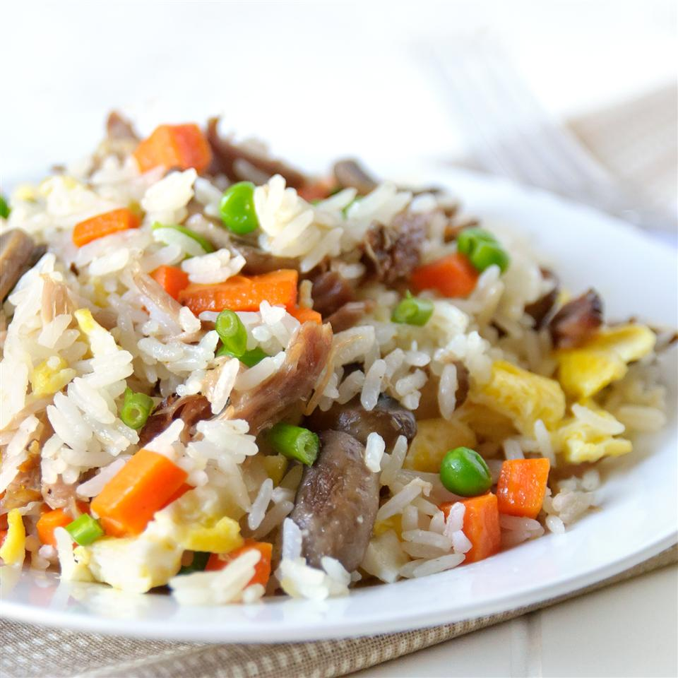

Pork Fried Rice

Description
This is my revised version of another pork fried rice recipe. I often substitute chicken for pork, and it doesn't change anything.
I have used both basmati rice and long-grain rice which gives the dish only a slight flavor difference. I have also added celery in the past with good outcomes. Enjoy.
Ingredients
- 1 tablespoon butter
- 1 (6 ounces) boneless pork loin chop, cut into small pieces
- 1/4 cup chopped carrot
- 1/4 cup chopped brocolli
- 1 green onion, chopped
- 1 egg, beaten
- 1 cup cold cooked rice
- 1/4 cup frozen peas
- 1 1/2 tablespoons soy sauce
- 1/8 teaspoon garlic powder
- 1/8 teaspoon ground ginger
Steps
- Melt butter in a large non-stick skillet over medium heat. Cook and stir pork, carrot, broccoli, peas, and green onion in melted butter until pork is cooked through, 7 to 10 minutes. Remove pork mixture to a bowl and return skillet to medium heat.
- Scramble egg in the skillet until completely set. Return the pork mixture to the skillet. Stir rice, peas, soy sauce, garlic powder, and ground ginger into the pork mixture; cook and stir until heated through, 7 to 10 minutes.
Back to hompage